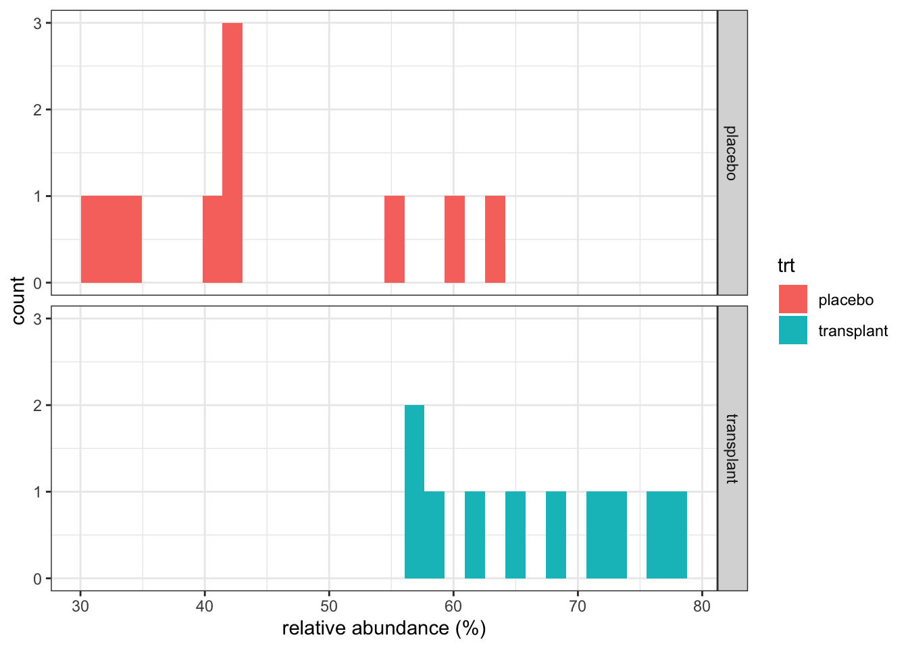
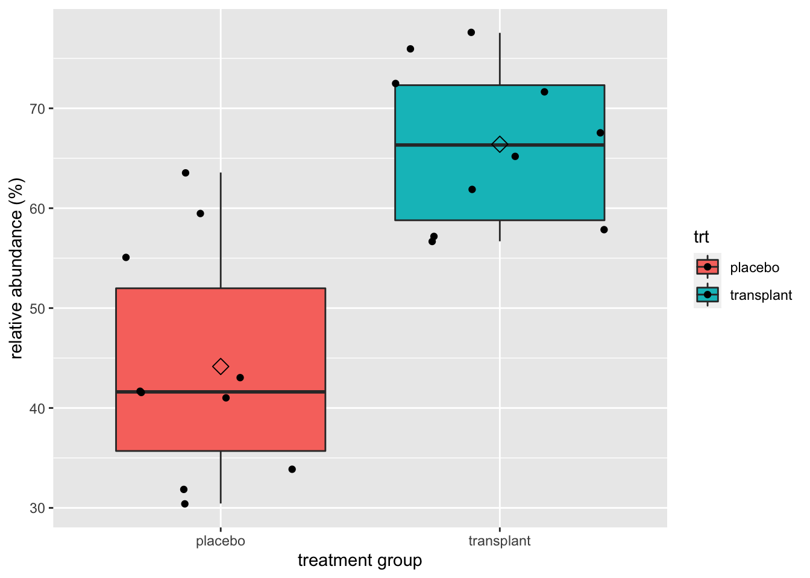

In this exercise, we will explore the “smelly armpit” dataset.
Smelly armpit dataset
Smelly armpits are not caused by sweat, itself. The smell is caused by specific micro-organisms belonging to the group of Corynebacterium spp. that metabolise sweat. Another group of abundant bacteria are the Staphylococcus spp., these bacteria do not metabolise sweat in smelly compounds.
The CMET-group at Ghent University does research to on transplanting the armpit microbiome to save people with smelly armpits.
Proposed Therapy:
- Remove armpit-microbiome with antibiotics
- Influence armpit microbiome with microbial transplant, see this 2 minute talk on youtube
Experiment:
- 20 students with smelly armpits are attributed to one of two treatment groups
- placebo (only antibiotics)
- transplant (antibiotica followed by microbial transplant).
- The microbiome is sampled 6 weeks upon the treatment
- The relative abundance of Staphylococcus spp. on Corynebacterium spp. + Staphylococcus spp. in the microbiome is measured via DGGE (Denaturing Gradient Gel Electrophoresis).
Load the libraries
Import the dataset
ap <- read_csv("https://raw.githubusercontent.com/statOmics/PSLS21/data/armpit.csv")
## Rows: 20 Columns: 2
## ── Column specification ────────────────────────────────────────────────────────
## Delimiter: ","
## chr (1): trt
## dbl (1): rel
##
## ℹ Use `spec()` to retrieve the full column specification for this data.
## ℹ Specify the column types or set `show_col_types = FALSE` to quiet this message.
## Rows: 20
## Columns: 2
## $ trt <chr> "placebo", "placebo", "placebo", "placebo", "placebo", "placebo", …
## $ rel <dbl> 54.99208, 31.84466, 41.09948, 59.52064, 63.57341, 41.48649, 30.440…
Goal
The overarching goal of this study was to assess if the relative abundance Staphylococcus spp. in the microbiome of the armpit is affected by transplanting the microbiome. To this end, the researchers randomized patients to two treatments: A treatment with antibiotics only and a treatment with antibiotics and a microbial transplant.
In the tutorial on hypotheses testing we will use a formal statistical test to generalize the results from the sample to that of the population. For this test to be valid, we have to assess following assumptions:
The data in each treatment group is normally distributed.
The data from the two treatment groups has the same variance.
A statistical analysis always starts with a exploratory data analysis to get insight in the nature and distribution of the data, and to assess the assumptions of the downstream data analysis. Mastering this data exploration step is the purpose of the current exercise
Data visualization
A crucial first step in a data analysis is to visualize and to explore the raw data.
First, try to make a histogram of the data. Fill in the missing parts in the chunk of code below to get a good-looking visualization:
ap %>%
ggplot(aes(x=rel,fill=trt)) + # fill in the correct values for x and fill
geom_histogram() +
facet_grid(rows = vars(trt)) + # fill in to put the histograms for both treatment conditions in a separate row
theme_bw() +
xlab("relative abundance (%)")
## `stat_bin()` using `bins = 30`. Pick better value with `binwidth`.

Based on this plot, it seems that the relative abundance is higher for subjects who had the transplants. However, given the small sample size the histograms are not optimally informative. A better option for these data would be to show the data in a boxplot:
ap %>% ggplot(aes(x=trt,y=rel,fill=trt)) +
geom_boxplot(outlier.shape=NA) +
geom_point(position="jitter") +
ylab("relative abundance (%)") +
xlab("treatment group") +
stat_summary(fun.y=mean, geom="point", shape=5, size=3, color="black", fill="black")
## Warning: `fun.y` is deprecated. Use `fun` instead.

What do you observe?
Descriptive statistics
Here, we will generate some informative descriptive statistics for the dataset.
We first summarize the data and calculate the mean, standard deviation, number of observations and standard error and store the result in an object apRelSum via ’apRelSum<-`
- We pipe the
ap dataframe to the group_by function to group the data by treatment trt group_by(trt)
- We pipe the result to the
summarize_at function to summarize the “rel” variable and calculate the mean, standard deviation and the number of observations
- We pipe the result to the
mutate function to make a new variable in the data frame that is named se for which we calculate the standard error
apRelSum<-ap%>%
group_by(trt)%>%
summarize_at("rel",
list(mean=~mean(.,na.rm=TRUE),
sd=~sd(.,na.rm=TRUE),
n=function(x) x%>%is.na%>%`!`%>%sum)) %>%
mutate(se=sd/sqrt(n))
apRelSum
This concludes the data exploration. Tomorrow, we will learn how to formally test if the observed difference is statistically significant.
LS0tCnRpdGxlOiAiRXhlcmNpc2UgNC4yOiBFeHBsb3JpbmcgdGhlIGFybXBpdCBkYXRhc2V0IC0gc29sdXRpb24iCmF1dGhvcjogIkxpZXZlbiBDbGVtZW50IGFuZCBKZXJvZW4gR2lsaXMiCmRhdGU6ICJzdGF0T21pY3MsIEdoZW50IFVuaXZlcnNpdHkgKGh0dHBzOi8vc3RhdG9taWNzLmdpdGh1Yi5pbykiCm91dHB1dDoKICAgIGh0bWxfZG9jdW1lbnQ6CiAgICAgIGNvZGVfZG93bmxvYWQ6IHRydWUgICAgCiAgICAgIHRoZW1lOiBjb3NtbwogICAgICB0b2M6IHRydWUKICAgICAgdG9jX2Zsb2F0OiB0cnVlCiAgICAgIGhpZ2hsaWdodDogdGFuZ28KICAgICAgbnVtYmVyX3NlY3Rpb25zOiB0cnVlCi0tLQoKSW4gdGhpcyBleGVyY2lzZSwgd2Ugd2lsbCBleHBsb3JlIHRoZSAic21lbGx5IGFybXBpdCIgZGF0YXNldC4gCgojIFNtZWxseSBhcm1waXQgZGF0YXNldAoKU21lbGx5IGFybXBpdHMgYXJlIG5vdCBjYXVzZWQgYnkgc3dlYXQsIGl0c2VsZi4gVGhlIHNtZWxsIGlzIGNhdXNlZApieSBzcGVjaWZpYyBtaWNyby1vcmdhbmlzbXMgYmVsb25naW5nIHRvIHRoZSBncm91cCBvZgoqQ29yeW5lYmFjdGVyaXVtIHNwcC4qIHRoYXQgbWV0YWJvbGlzZSBzd2VhdC4gQW5vdGhlciBncm91cCBvZiBhYnVuZGFudCBiYWN0ZXJpYQphcmUgdGhlICpTdGFwaHlsb2NvY2N1cyBzcHAuKiwgdGhlc2UgYmFjdGVyaWEgZG8gbm90IG1ldGFib2xpc2Ugc3dlYXQgaW4gc21lbGx5IApjb21wb3VuZHMuCgpUaGUgQ01FVC1ncm91cCBhdCBHaGVudCBVbml2ZXJzaXR5IGRvZXMgcmVzZWFyY2ggdG8gb24gdHJhbnNwbGFudGluZyB0aGUgYXJtcGl0IAptaWNyb2Jpb21lIHRvIHNhdmUgcGVvcGxlIHdpdGggc21lbGx5IGFybXBpdHMuCgotIFByb3Bvc2VkIFRoZXJhcHk6CiAgCTEuIFJlbW92ZSBhcm1waXQtbWljcm9iaW9tZSB3aXRoIGFudGliaW90aWNzCiAgICAyLiBJbmZsdWVuY2UgYXJtcGl0IG1pY3JvYmlvbWUgd2l0aCBtaWNyb2JpYWwgdHJhbnNwbGFudCwgc2VlIHRoaXMgMiBtaW51dGUKICAgICAgIHRhbGsgb24gW3lvdXR1YmVdKGh0dHBzOi8veW91dHUuYmUvOVJJRnlxTFhkVncpCgotIEV4cGVyaW1lbnQ6CgogICAgLSAyMCBzdHVkZW50cyB3aXRoIHNtZWxseSBhcm1waXRzIGFyZSBhdHRyaWJ1dGVkIHRvIG9uZSBvZiAKICAgICAgdHdvIHRyZWF0bWVudCBncm91cHMKICAgIC0gcGxhY2VibyAob25seSBhbnRpYmlvdGljcykKICAgIC0gdHJhbnNwbGFudCAoYW50aWJpb3RpY2EgZm9sbG93ZWQgYnkgbWljcm9iaWFsIHRyYW5zcGxhbnQpLgogICAgLSBUaGUgbWljcm9iaW9tZSBpcyBzYW1wbGVkIDYgd2Vla3MgdXBvbiB0aGUgdHJlYXRtZW50CiAgICAtIFRoZSByZWxhdGl2ZSBhYnVuZGFuY2Ugb2YgKlN0YXBoeWxvY29jY3VzIHNwcC4qIG9uCiAgICAgICpDb3J5bmViYWN0ZXJpdW0gc3BwLiogKyAqU3RhcGh5bG9jb2NjdXMgc3BwLiogaW4gdGhlCiAgICAgIG1pY3JvYmlvbWUgaXMgbWVhc3VyZWQgdmlhIERHR0UgKCpEZW5hdHVyaW5nIEdyYWRpZW50IEdlbAogICAgICBFbGVjdHJvcGhvcmVzaXMqKS4KCkxvYWQgdGhlIGxpYnJhcmllcwoKYGBge3IsIG1lc3NhZ2U9RkFMU0UsIHdhcm5pbmc9RkFMU0V9CmxpYnJhcnkodGlkeXZlcnNlKQpgYGAKCiMgSW1wb3J0IHRoZSBkYXRhc2V0CgpgYGB7cn0KYXAgPC0gcmVhZF9jc3YoImh0dHBzOi8vcmF3LmdpdGh1YnVzZXJjb250ZW50LmNvbS9zdGF0T21pY3MvUFNMUzIxL2RhdGEvYXJtcGl0LmNzdiIpCmBgYAoKYGBge3J9CmdsaW1wc2UoYXApCmBgYAoKIyBHb2FsCgpUaGUgb3ZlcmFyY2hpbmcgZ29hbCBvZiB0aGlzIHN0dWR5IHdhcyB0byBhc3Nlc3MgaWYgdGhlIHJlbGF0aXZlIGFidW5kYW5jZSAKKlN0YXBoeWxvY29jY3VzIHNwcC4qIGluIHRoZSBtaWNyb2Jpb21lIG9mIHRoZSBhcm1waXQgaXMgYWZmZWN0ZWQgYnkgCnRyYW5zcGxhbnRpbmcgdGhlIG1pY3JvYmlvbWUuIFRvIHRoaXMgZW5kLCB0aGUgcmVzZWFyY2hlcnMgcmFuZG9taXplZCBwYXRpZW50cyAKdG8gdHdvIHRyZWF0bWVudHM6IEEgdHJlYXRtZW50IHdpdGggYW50aWJpb3RpY3Mgb25seSBhbmQgYSB0cmVhdG1lbnQgd2l0aAphbnRpYmlvdGljcyBhbmQgYSBtaWNyb2JpYWwgdHJhbnNwbGFudC4KCkluIHRoZSB0dXRvcmlhbCBvbiBoeXBvdGhlc2VzIHRlc3Rpbmcgd2Ugd2lsbCB1c2UgYSBmb3JtYWwgc3RhdGlzdGljYWwgdGVzdCB0byAKZ2VuZXJhbGl6ZSB0aGUgcmVzdWx0cyBmcm9tIHRoZSBzYW1wbGUgdG8gdGhhdCBvZiB0aGUgcG9wdWxhdGlvbi4KRm9yIHRoaXMgdGVzdCB0byBiZSB2YWxpZCwgd2UgaGF2ZSB0byBhc3Nlc3MgZm9sbG93aW5nIGFzc3VtcHRpb25zOgoKMS4gVGhlIGRhdGEgaW4gZWFjaCB0cmVhdG1lbnQgZ3JvdXAgaXMgbm9ybWFsbHkgZGlzdHJpYnV0ZWQuCgoyLiBUaGUgZGF0YSBmcm9tIHRoZSB0d28gdHJlYXRtZW50IGdyb3VwcyBoYXMgdGhlIHNhbWUgdmFyaWFuY2UuCgpBIHN0YXRpc3RpY2FsIGFuYWx5c2lzIGFsd2F5cyBzdGFydHMgd2l0aCBhIGV4cGxvcmF0b3J5IGRhdGEgYW5hbHlzaXMgdG8gZ2V0IAppbnNpZ2h0IGluIHRoZSBuYXR1cmUgYW5kIGRpc3RyaWJ1dGlvbiBvZiB0aGUgZGF0YSwgYW5kIHRvIGFzc2VzcyB0aGUgCmFzc3VtcHRpb25zIG9mIHRoZSBkb3duc3RyZWFtIGRhdGEgYW5hbHlzaXMuIE1hc3RlcmluZyB0aGlzIGRhdGEgZXhwbG9yYXRpb24gCnN0ZXAgaXMgdGhlIHB1cnBvc2Ugb2YgdGhlIGN1cnJlbnQgZXhlcmNpc2UKCiMgRGF0YSB2aXN1YWxpemF0aW9uCgpBIGNydWNpYWwgZmlyc3Qgc3RlcCBpbiBhIGRhdGEgYW5hbHlzaXMgaXMgdG8gdmlzdWFsaXplIGFuZCB0byBleHBsb3JlIHRoZSByYXcKZGF0YS4KCkZpcnN0LCB0cnkgdG8gbWFrZSBhIGhpc3RvZ3JhbSBvZiB0aGUgZGF0YS4gRmlsbCBpbiB0aGUKbWlzc2luZyBwYXJ0cyBpbiB0aGUgY2h1bmsgb2YgY29kZSBiZWxvdyB0byBnZXQgYSBnb29kLWxvb2tpbmcKdmlzdWFsaXphdGlvbjoKCmBgYHtyfQphcCAlPiUKICBnZ3Bsb3QoYWVzKHg9cmVsLGZpbGw9dHJ0KSkgKyAjIGZpbGwgaW4gdGhlIGNvcnJlY3QgdmFsdWVzIGZvciB4IGFuZCBmaWxsIAogIGdlb21faGlzdG9ncmFtKCkgKwogIGZhY2V0X2dyaWQocm93cyA9IHZhcnModHJ0KSkgKyAjIGZpbGwgaW4gdG8gcHV0IHRoZSBoaXN0b2dyYW1zIGZvciBib3RoIHRyZWF0bWVudCBjb25kaXRpb25zIGluIGEgc2VwYXJhdGUgcm93CiAgdGhlbWVfYncoKSArCiAgeGxhYigicmVsYXRpdmUgYWJ1bmRhbmNlICglKSIpCmBgYAoKQmFzZWQgb24gdGhpcyBwbG90LCBpdCBzZWVtcyB0aGF0IHRoZSByZWxhdGl2ZSBhYnVuZGFuY2UKaXMgaGlnaGVyIGZvciBzdWJqZWN0cyB3aG8gaGFkIHRoZSB0cmFuc3BsYW50cy4KSG93ZXZlciwgZ2l2ZW4gdGhlIHNtYWxsIHNhbXBsZSBzaXplIHRoZSBoaXN0b2dyYW1zCmFyZSBub3Qgb3B0aW1hbGx5IGluZm9ybWF0aXZlLiBBIGJldHRlciBvcHRpb24gZm9yIHRoZXNlIGRhdGEgd291bGQgYmUgdG8Kc2hvdyB0aGUgZGF0YSBpbiBhIGBib3hwbG90YDoKCmBgYHtyfQphcCAlPiUgIGdncGxvdChhZXMoeD10cnQseT1yZWwsZmlsbD10cnQpKSArCiAgZ2VvbV9ib3hwbG90KG91dGxpZXIuc2hhcGU9TkEpICsgCiAgZ2VvbV9wb2ludChwb3NpdGlvbj0iaml0dGVyIikgKwogIHlsYWIoInJlbGF0aXZlIGFidW5kYW5jZSAoJSkiKSArCiAgeGxhYigidHJlYXRtZW50IGdyb3VwIikgKyAKICBzdGF0X3N1bW1hcnkoZnVuLnk9bWVhbiwgZ2VvbT0icG9pbnQiLCBzaGFwZT01LCBzaXplPTMsIGNvbG9yPSJibGFjayIsIGZpbGw9ImJsYWNrIikKYGBgCgpXaGF0IGRvIHlvdSBvYnNlcnZlPwoKIyBEZXNjcmlwdGl2ZSBzdGF0aXN0aWNzCgpIZXJlLCB3ZSB3aWxsIGdlbmVyYXRlIHNvbWUgaW5mb3JtYXRpdmUgZGVzY3JpcHRpdmUgc3RhdGlzdGljcwpmb3IgdGhlIGRhdGFzZXQuCgpXZSBmaXJzdCBzdW1tYXJpemUgdGhlIGRhdGEgYW5kIGNhbGN1bGF0ZSB0aGUgbWVhbiwgc3RhbmRhcmQKZGV2aWF0aW9uLCBudW1iZXIgb2Ygb2JzZXJ2YXRpb25zIGFuZCBzdGFuZGFyZCBlcnJvciBhbmQgc3RvcmUgdGhlCnJlc3VsdCBpbiBhbiBvYmplY3QgYXBSZWxTdW0gdmlhICdhcFJlbFN1bTwtYAoKMS4gV2UgcGlwZSB0aGUgYGFwYCBkYXRhZnJhbWUgdG8gdGhlIGdyb3VwX2J5IGZ1bmN0aW9uIHRvIGdyb3VwCnRoZSBkYXRhIGJ5IHRyZWF0bWVudCB0cnQgYGdyb3VwX2J5KHRydClgCjIuIFdlIHBpcGUgdGhlIHJlc3VsdCB0byB0aGUgYHN1bW1hcml6ZV9hdGAgZnVuY3Rpb24gdG8gc3VtbWFyaXplCnRoZSAicmVsIiB2YXJpYWJsZSBhbmQgY2FsY3VsYXRlIHRoZSBtZWFuLCBzdGFuZGFyZCBkZXZpYXRpb24gYW5kCnRoZSBudW1iZXIgb2Ygb2JzZXJ2YXRpb25zIAozLiBXZSBwaXBlIHRoZSByZXN1bHQgdG8gdGhlIGBtdXRhdGVgIGZ1bmN0aW9uIHRvIG1ha2UgYSBuZXcKdmFyaWFibGUgaW4gdGhlIGRhdGEgZnJhbWUgdGhhdCBpcyBuYW1lZCBgc2VgIGZvciB3aGljaCB3ZSBjYWxjdWxhdGUgdGhlCnN0YW5kYXJkIGVycm9yIAoKYGBge3J9CmFwUmVsU3VtPC1hcCU+JQogIGdyb3VwX2J5KHRydCklPiUKICBzdW1tYXJpemVfYXQoInJlbCIsCiAgICAgICAgICAgICAgIGxpc3QobWVhbj1+bWVhbiguLG5hLnJtPVRSVUUpLAogICAgICAgICAgICAgICAgICAgIHNkPX5zZCguLG5hLnJtPVRSVUUpLAogICAgICAgICAgICAgICAgICAgIG49ZnVuY3Rpb24oeCkgeCU+JWlzLm5hJT4lYCFgJT4lc3VtKSkgJT4lCiAgbXV0YXRlKHNlPXNkL3NxcnQobikpCgphcFJlbFN1bQpgYGAKClRoaXMgY29uY2x1ZGVzIHRoZSBkYXRhIGV4cGxvcmF0aW9uLiBUb21vcnJvdywgd2Ugd2lsbCBsZWFybiBob3cgdG8gZm9ybWFsbHkKdGVzdCBpZiB0aGUgb2JzZXJ2ZWQgZGlmZmVyZW5jZSBpcyAqKnN0YXRpc3RpY2FsbHkgc2lnbmlmaWNhbnQqKi4KCg==